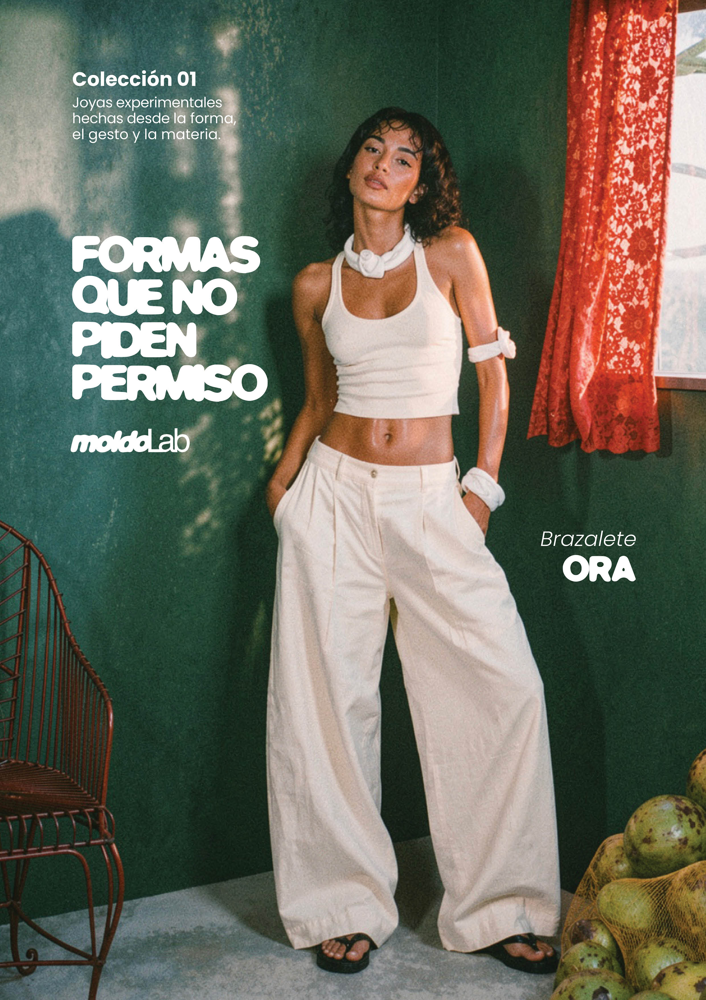
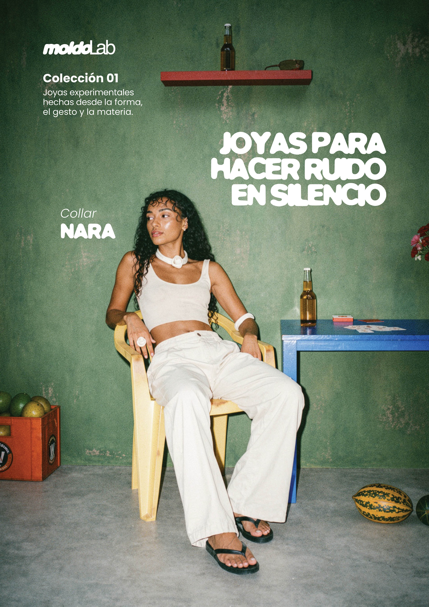
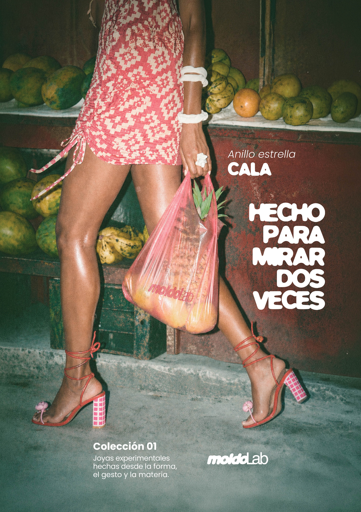
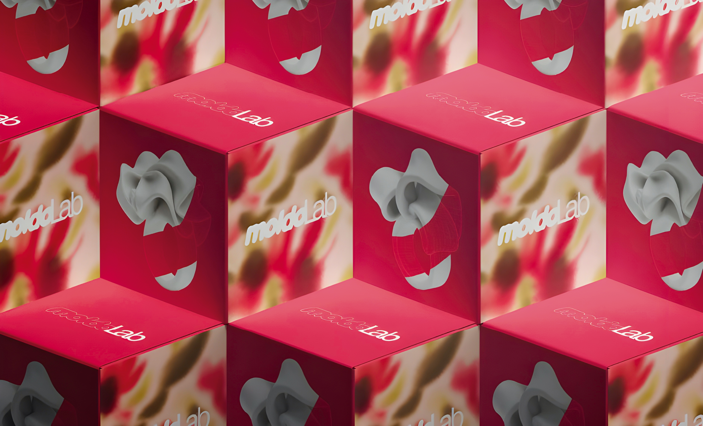

Trabajo Final de Grado · Diseño Gráfico · 2026
Joyas experimentales para cuerpos contemporáneos.
Una marca que no nace para adornar, sino para expresar identidad.
Joyería alternativa construida desde la forma, la materia y la presencia.

01 / Origen
Cuando todo empieza
a parecerse demasiado
moldoLab nace de observar un entorno donde todo se parece demasiado: tendencias rápidas y objetos repetidos que terminan haciendo que nada tenga personalidad. Frente a eso, una joyería que entiende la pieza como identidad, no como accesorio.
01
Problema
La joyería tradicional
Asociada al lujo material, al valor económico y a los códigos clásicos.
02
Oportunidad
El nuevo público
Jóvenes y creativos buscan objetos que comuniquen actitud y estética propia.
03
Respuesta
moldoLab
Polímeros flexibles, formas orgánicas y narrativa gráfica para piezas con presencia.
No buscamos piezas que combinen con todo. Buscamos piezas que digan algo.
↓ Investigación02 / Investigación
De la joya
como objeto
a la joya como lenguaje
La joyería nunca ha sido solo decorativa. Ha funcionado como símbolo, archivo emocional y forma de representación. moldoLab traslada esa lectura al contexto contemporáneo.
El polímero no es un sustituto del material noble — es un recurso expresivo con valor propio.
03 / Concepto de marca
No está hecho
para encajar
La identidad tiene más valor que la tendencia. moldoLab usa polímeros y resina como recurso expresivo, no como sustituto de lo noble. La pieza no adorna: es una extensión de quien la lleva.
Si encaja con todo,
probablemente no sea nuestro.
Identidad
Cada pieza habla de quien la lleva sin explicarlo.
Actitud
Diseñada para romper moldes, no para seguirlos.
Estética
Personalidad propia, alejada de lo excesivamente perfecto.
Presencia
Formas que generan algo. Que no pasan desapercibidas.
04 / Identidad verbal
La marca habla como piensa
Una voz directa, sensorial y con un punto de provocación. No busca convencer a todos: busca conectar con quien entiende su universo. Seis frases que resumen su manifiesto.
No sabes por qué te gusta
Sabes que es tuyo.
No seguimos tendencias
Las usamos, las mezclamos... o las ignoramos.
Lo imperfecto tiene personalidad
Y la personalidad siempre gana.
No todo el mundo lo entiende
Y no pasa nada.
No creemos en lo correcto
Si una pieza es demasiado rara... probablemente vamos bien.
El material no define el valor
Lo que vale es lo que transmite.
05 / Identidad visual
El molde,
como punto de partida
El logotipo nace de la idea de molde y la invierte: no como límite para repetir, sino como punto de partida para romperlo.
moldo — formas redondeadas, blandas y continuas: la materialidad de las piezas.
Lab — contraste limpio y estructurado: laboratorio, proceso, desarrollo.
Una marca experimental, pero no caótica. Artesanal, pero con intención visual clara.
Sistema tipográfico
MOLDO
Moldo — Tipografía propia del logotipo · titulares de impacto
Poppins
Poppins — Tipografía principal · cuerpo y estructura
esto no es para todos
Casual Human — Notas y tono cercano
Paleta corporativa + degradado propio
06 / Colección SS·26
Cinco piezas.
Una misma actitud.
Dos anillos, un collar, un brazalete y unos pendientes. Todas trabajan desde el volumen, el gesto, la fluidez y la presencia escultórica.

Anillo estrella · 45 €
CALA
Gran volumen y presencia escultórica. Su forma blanda y envolvente rompe con la idea clásica del anillo discreto.
Ver pieza ↗
Collar · 96 €
NARA
Continuidad y torsión. Su forma central envolvente convierte el collar en una declaración limpia pero expresiva.
Ver pieza ↗
Brazalete · 53 €
ORA
Forma amplia y envolvente, definida por un recorrido fluido que parece plegarse sobre sí mismo.
Ver pieza ↗
Pendientes · 45 €
SIRA
Volumen compacto y carácter escultórico. Pliegues entrelazados que generan una forma cerrada y expresiva.
Ver pieza ↗
Anillo · 45 €
LUA
Curva, brillo y sensación de fluidez. Apariencia suave pero gran impacto visual.
Ver pieza ↗"No son piezas para encajar. Son piezas para reconocerse." · Cada pieza abre en una pestaña nueva.
↓ Material y proceso07 / Material y proceso
El material no
define el valor
Polímeros flexibles: ligereza, volumen, comodidad y libertad para crear formas alejadas de la joyería tradicional. No precioso, pero sí valioso.
Proceso creativo

08 / Dirección de arte
Lo imperfecto
tiene personalidad
La campaña sitúa las piezas en escenas cálidas, urbanas y sensoriales. La joya no aparece aislada: se integra en una escena viva, cotidiana y sensorial donde cuerpo, objeto y entorno construyen una misma narrativa.
Secuencia visual · 12 fotografías
09 / Cartelería de campaña
Tres frases.
Una misma actitud.
La cartelería traduce el tono verbal de la marca a piezas gráficas directas y reconocibles. Los carteles no explican la marca: la lanzan.
01 Formas que no piden permiso
02 Joyas para hacer ruido en silencio
03 Hecho para mirar dos veces

Cartel · 01

Cartel · 02

Cartel · 03
10 / Packaging
El primer contacto
físico con la pieza.
El packaging de moldoLab extiende la identidad de la marca hasta el momento del unboxing. Caja rígida y bolsa de tela conforman un sistema coherente donde la mancha orgánica de campaña convive con el rigor del packaging de joyería.
01 Caja rígida con estampado de campaña
02 Bolsa de tela con bordado


11 / Aplicaciones gráficas
Un mismo universo,
muchos soportes
La identidad de moldoLab no se queda en el logotipo: se aplica de forma coherente en cada punto de contacto con la marca, manteniendo siempre la misma intención y lenguaje visual.
Manual de identidad
Las normas que ordenan el universo visual: logotipo, color, tipografía y usos.
Brand Book
El relato de la marca: concepto, tono, actitud y dirección de arte.
Packaging
El primer contacto físico con la pieza. Bolsa, etiqueta y experiencia de unboxing.
Campaña y editorial
Fotografía, carteles y piezas gráficas que construyen el deseo visual.
Redes sociales
Instagram y TikTok como escaparate y narrativa diaria de la marca.
Web y tienda
El espacio digital donde descubrir, personalizar y comprar las piezas.
12 / Web y experiencia digital
La web como extensión
del universo
La web pública funciona como espacio comercial y editorial: permite descubrir la marca, conocer la colección y comprar las piezas. Esta landing privada amplía esa experiencia.
"La presentación no se separa de la marca.
Forma parte de ella."
Web pública
Experiencia de usuario
Pensada para el usuario final: compra, exploración de colección, materiales y universo visual.
Visitar web pública ↗Landing privada
Presentación del proyecto
Pensada para presentar el TFG: investigación, identidad, piezas, campaña, estrategia y cierre.
13 / Estrategia y viabilidad
No solo es una
marca bonita.
moldoLab se plantea como una marca viable en la joyería contemporánea alternativa. Su valor no reside solo en el producto, sino en la identidad, la narrativa y la comunidad.
Colección inicial — 5 piezas · 100 uds c/u · 500 total
Producción bajo pedido · 5–7 días hábiles · Primera colección cápsula con fuerte carga visual e identitaria.
14 / Cierre
moldoLab no cierra un proyecto. Abre una forma de mirar la joyería.
El valor de una pieza no depende del material — depende de lo que comunica, de cómo se relaciona con el cuerpo y de la identidad que ayuda a construir.
Este proyecto une diseño gráfico, diseño de producto, dirección de arte, comunicación visual y estrategia. La colección, la identidad, la campaña, la web y las aplicaciones forman un mismo universo.
15 / Archivo moldoLab
Archivo visual
Una lectura rápida del universo moldoLab: campaña, piezas, carteles, redes y aplicaciones.
Documentos descargables
Memoria del proyecto
Documento completo · Disponible
Brand Book
Cuadernillo de marca · Disponible
Manual de identidad
Brand guidelines · Disponible
Spot publicitario
Pieza audiovisual · Disponible